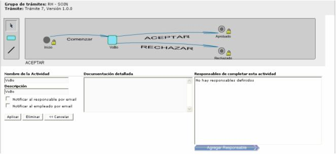
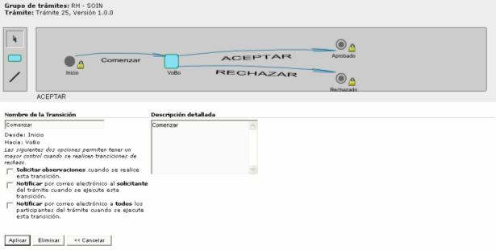

Aquí se especifican los trámites, procesos o gestiones que se tienen que llevar a cabo para autorizar una solicitud. Se deben de definir los diferentes pasos a seguir, para la aprobación de una acción de personal. Se pueden agregar actividades y transiciones , además se le asocian las personas responsables de completar esa actividad, para que una vez que se complete, seguir con el siguiente paso y así sucesivamente hasta llegar a aceptar o rechazar dicha acción.
Si se presiona una actividad, se presenta la siguiente pantalla:

Si se presiona una transacción, se presenta la siguiente pantalla:

Cuando una acción de personal lleva asociado un trámite, cuando se va a aplicar dicha acción esta queda en estado de pendiente, hasta que se termine el trámite. Si el resultado del trámite fue Aceptado, procede dicha acción si no la acción no tiene efecto.
Solo los trámites que están en estado de Aprobado, son los que se puede asociar a las acciones de personal.